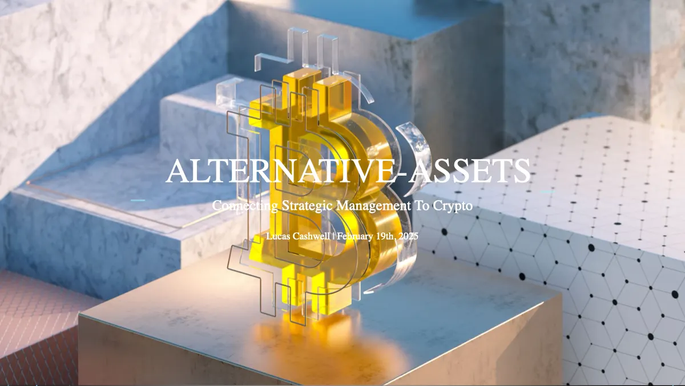

Embrace the volatility, or sell it
Anthony Scaramucci, founder and head manager of the alternative-asset investment fund SkyBridge Capital, has been preaching crypto’s emerging value well before Trump’s first term. He predicts BTC will reach $200,000 by the end of the year. The start of 2025, however, has been discomforting for crypto believers; the industry endures continuous skepticism from both private investors and federal decision-makers. This reluctance can often be boiled down to one tenet of crypto that has been the driving force behind investor anxiety since investing’s conception: volatility. The strategy in the alternative-asset investment world is, in SkyBridge’s case, embracing the volatility, or in MicroStrategy’s case, selling it.
Companies like SkyBridge and the public firm MicroStrategy noticed something about potential crypto investors. Investors, whether they be large institutions or private citizens, typically have little tolerance for volatility; they want their money to go up without going down too much along the way. This sentiment creates a barrier to investing in assets like Bitcoin, whose volatility is usually 5x that of a typical stock. SkyBridge, like a number of other financial firms, found that ETFs were an answer to this psychological barrier.
The strategy SkyBridge formulated is one of differentiation. Their assets are alternative, and their investments are emerging, unlike most big-money managers who create steady, slow returns with little volatility using fixed-income instruments (bonds) or other safe-call stock packages (index funds). Their strategic alignment is not a focused differentiation, however, as their audience and their investments are diverse. SkyBridge offers a diversified product, $CRPT, which focuses not only on Bitcoin, but other alternative-asset and AI positions, including stake in the largest crypto exchange Coinbase and stocks like NVIDIA. Committed to their strategy of differentiation, their $CRPT fund was argued to be the best performing ETF of 2024 with a return of 74%.
MicroStrategy, which is basically the differentiation-focus version of SkyBridge because it only sells Bitcoin products, went up 477% last calendar year. Their strategy plays to the sect of people who like the name-brand reputability of Bitcoin but don’t like its volatility. Michael Saylor of $MSTR has founded what he calls a “spinning Bitcoin reactor,” which is essentially their short list of solely Bitcoin-based financial instruments, most of which leverage debt. MSTR’s main attraction is their Bitcoin investment in the form of a bond, where investors pay a high premium on the price of Bitcoin and get a fixed-income investment in return. Who knew you could trade Bitcoin without the volatility?
The competitive environment of the alternative-assets industry is tricky though. The industry is heavily influenced by economic conditions, regulatory developments, and the race for AI leadership, all forces that are currently wavering or have a degree of uncertainty. Regulation could create a national Bitcoin reserve, establishing a huge win for the industry, but its creation is currently a dream with little bipartisan support. A PESTEL analysis would tell you that the political and social factors of the alternative-assets strategy need improvement. Most investors, retail or institutional, are put off by crypto’s embarrassing moments of meme coin implosions and massive scams. People put their money back in their pockets when they hear “TRUMP Coin is going to the moon” or “FTX stole $8 billion!”
So, the name of the game for companies like SkyBridge and MicroStrategy is to lead by example: employ a strategy that differentiates yourselves from the frauds and the naysayers, and let society and the government catch up to you.
Talk · February 19, 2025
